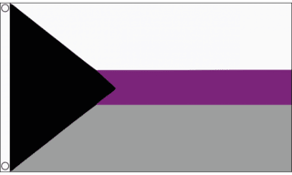

This is all about Demisexual
This page will contain the definiton and flag
Demisexuality is a type of sexuality or sexual orientation. People who identify as demisexual only feel sexual attraction to another person if they form a strong emotional bond or connection with them first. Keep reading for more information about what a demisexual is and how demisexuality differs from other sexual orientations.
